全部视频 · 26 部
每一部都是用代码一帧一帧画出来的科普动画。点开即看，下方配图文详解。
AI 与大模型9 部
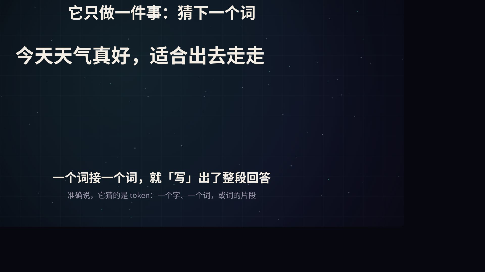
1:12猜下一个词、训练、注意力机制
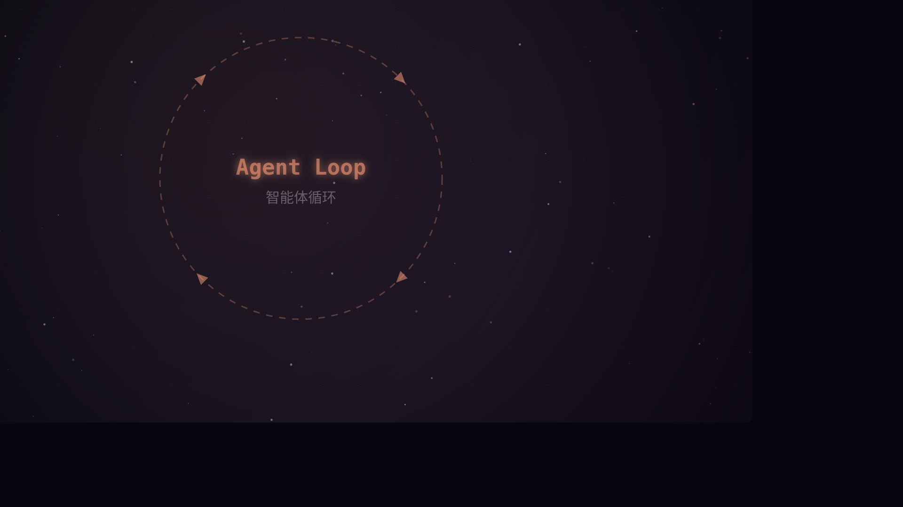
1:24大模型 + 工具 + 循环，十几行核心代码
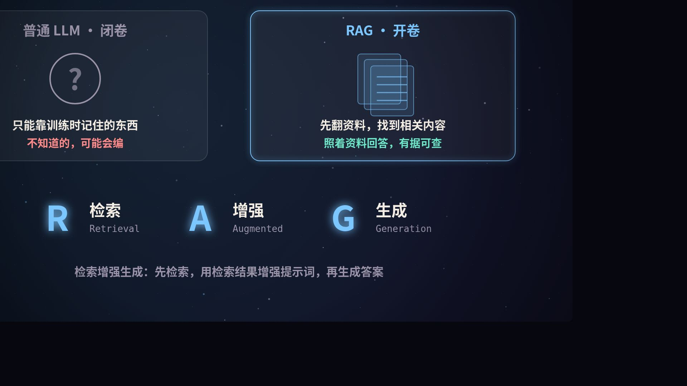
1:12开卷考试、向量检索、拼提示词再生成
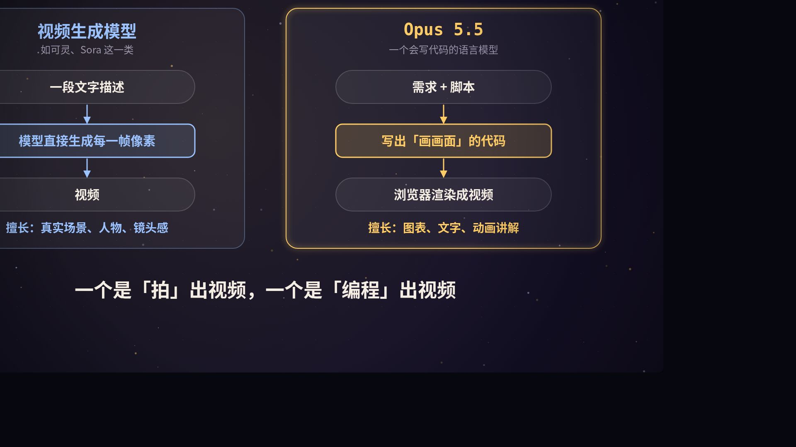
1:16不生成像素，而是写代码；draw(t)、逐帧截图、自我检查
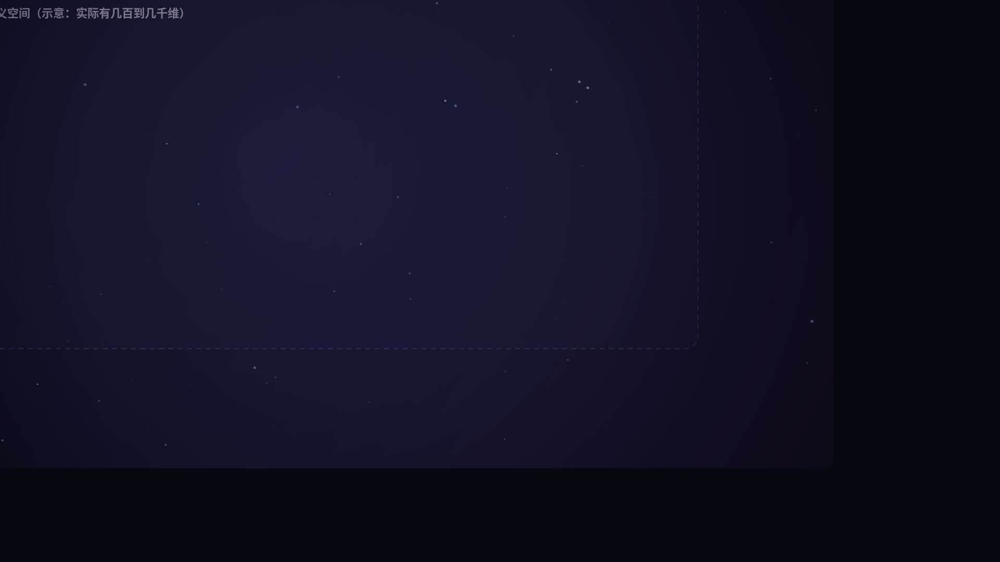
1:20语义空间、向量运算、对比学习、余弦相似度
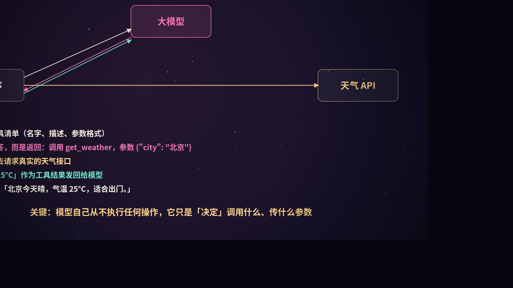
1:20工具调用五步、工具设计、MCP 架构与安全
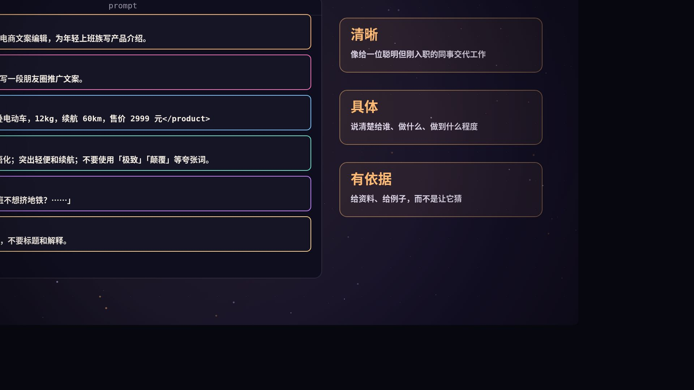
1:20好提示词的结构、少样本、思维链、JSON 输出与校验
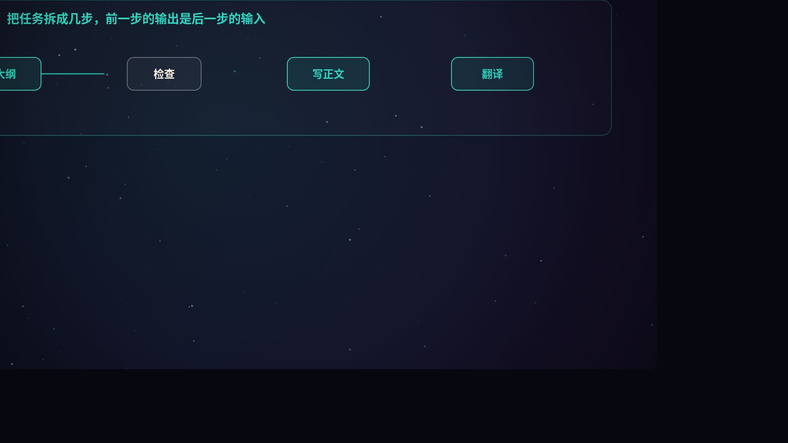
1:20工作流与智能体、五种模式、ReAct 循环、设计原则
测试集、三种打分方式、看细分指标、评估驱动迭代
计算机与后端14 部
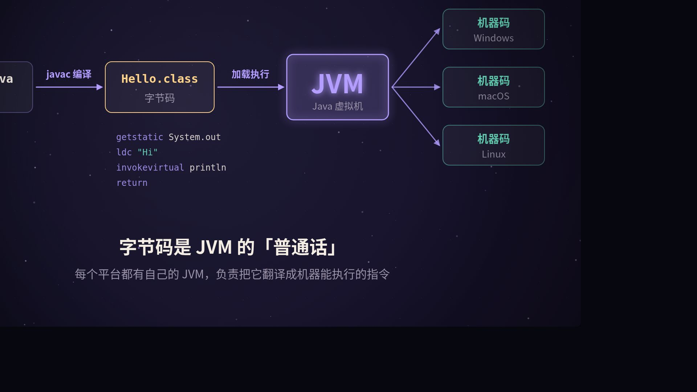
1:12字节码、内存区域、垃圾回收、JIT
隔离的进程、共享的线程、上下文切换、用户态协程
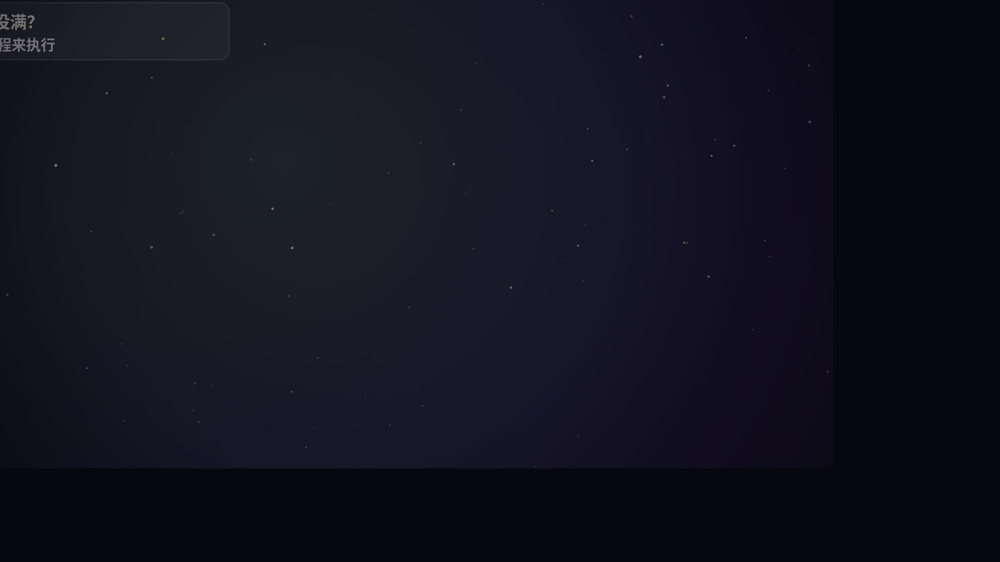
1:20银行柜台比喻、任务流转、7 个参数、拒绝策略
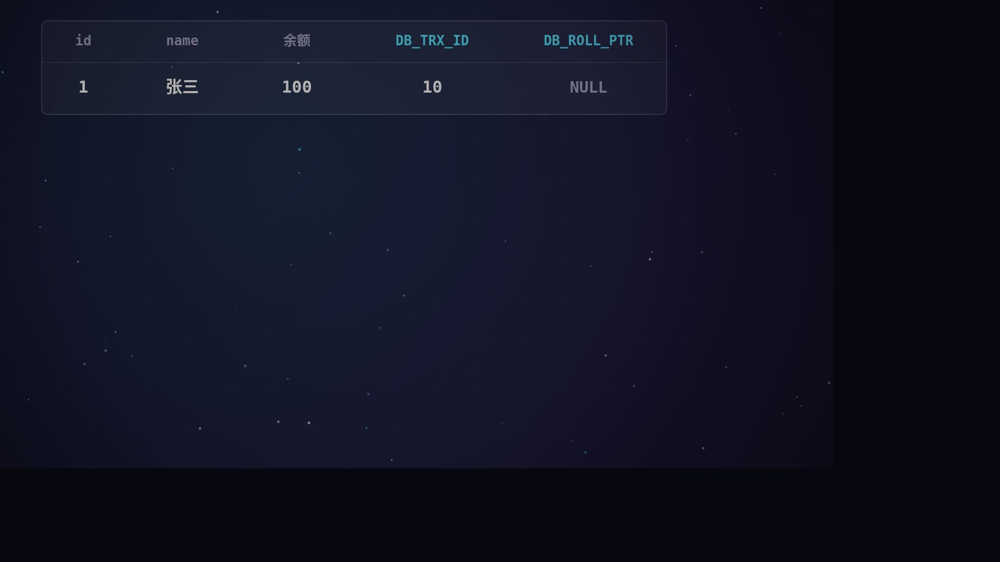
1:20隐藏列、undo 版本链、ReadView、RC 与 RR
DNS、TCP 与 TLS 握手、HTTP 请求响应、浏览器渲染
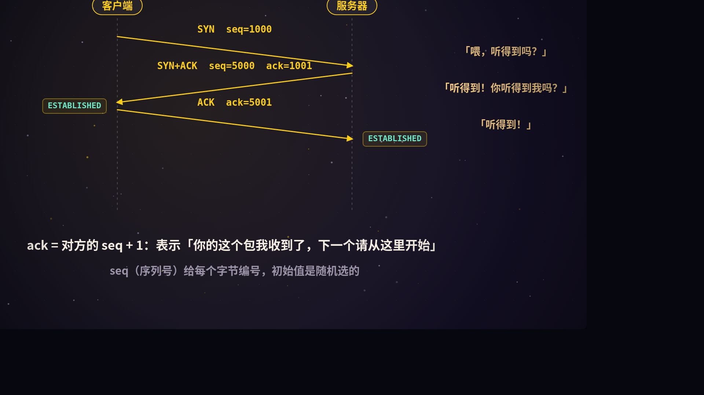
1:20为什么是三次、四次挥手、重传与窗口、SYN 洪水
磁盘 IO、B+ 树查找、回表与覆盖索引、最左前缀
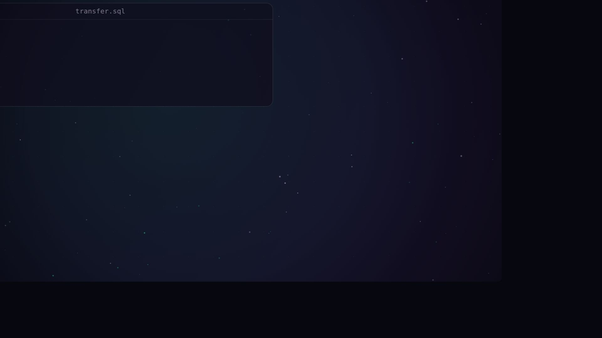
1:20undo log、redo log 与 WAL、隔离级别、一致性
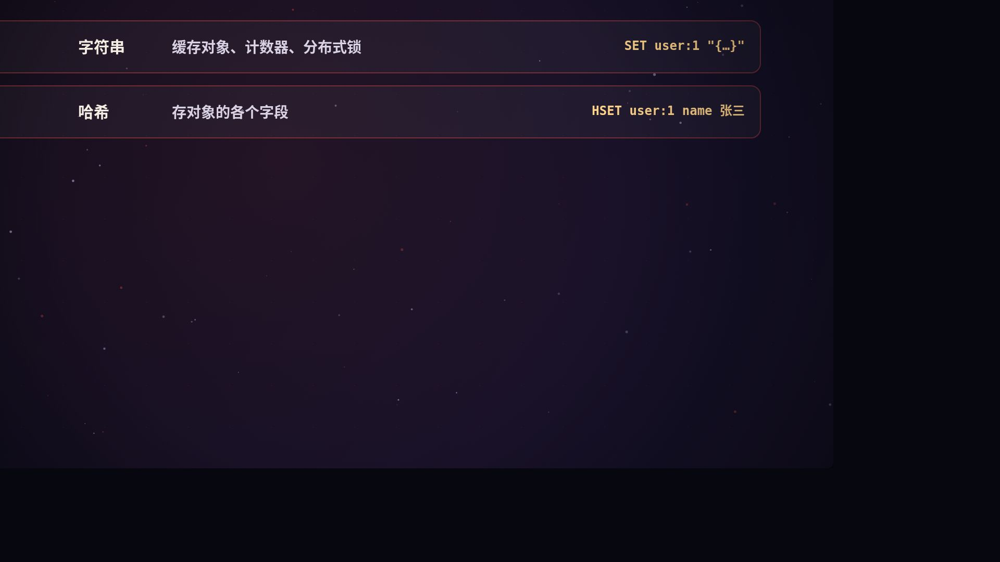
1:20为什么快、数据类型、旁路缓存、穿透击穿雪崩
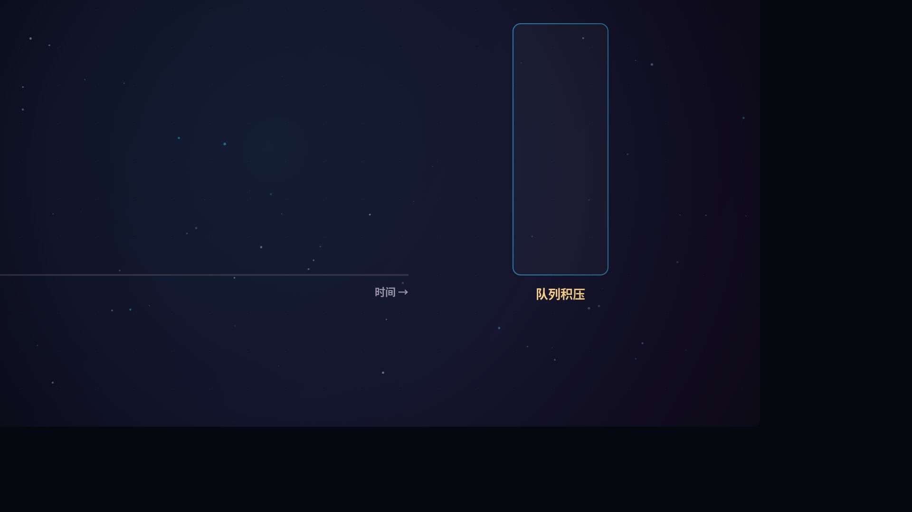
1:24解耦异步削峰、Kafka 分区、不丢不重有序
分区时 C 与 A 二选一、三选二的误解、最终一致
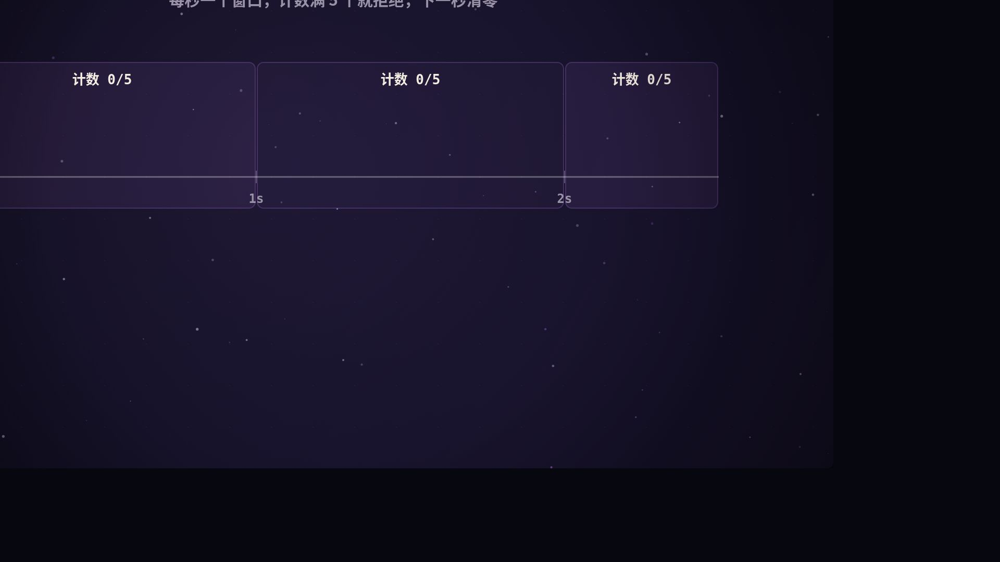
1:20固定窗口、滑动窗口、漏桶、令牌桶，分布式限流
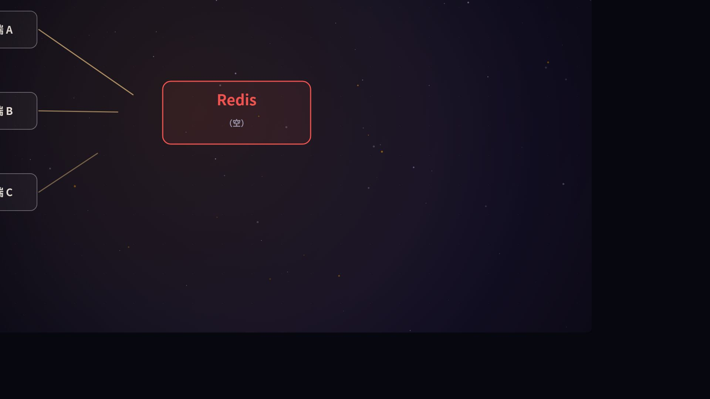
1:20SET NX PX、Lua 释放、看门狗、Redlock 与 Fencing
S/X 锁、记录锁·间隙锁·临键锁、死锁